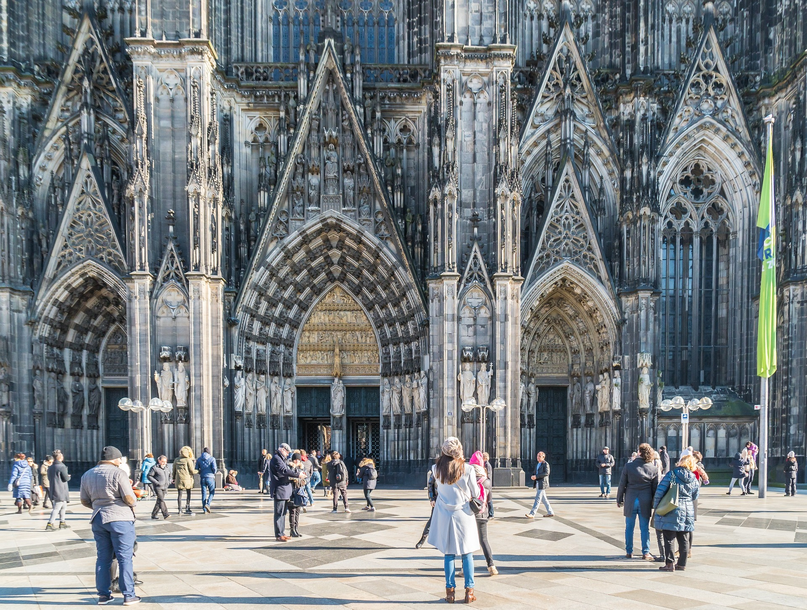

Cologne`s Cathedral in short:
In 1880, the tallest building in the world, after 632 years of
construction
Architectural style: Gothic architecture
Height: 157 m
Architects: Master Gerhard, Ernst Friedrich
Zwirner, etc.
Finished: 1880
Seats: 800 - 1500
